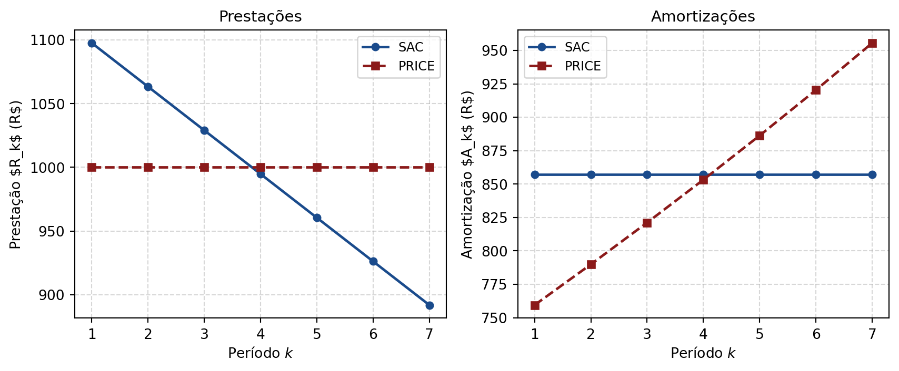

5 Sistemas de Amortização
5.1 Estrutura Geral de uma Prestação
Quando se toma um empréstimo de valor \(P\) a uma taxa \(i\) por período, cada prestação \(R_t\) é composta de duas partes:
ImportantResultado
\[R_t = J_t + A_t,\]
onde \(J_t = i \cdot P_{t-1}\) são os juros do período \(t\), calculados sobre o saldo devedor \(P_{t-1}\); \(A_t\) é a amortização do período \(t\); e \(P_t = P_{t-1} - A_t\) é o saldo devedor ao final do período \(t\).
À medida que o tempo passa e o principal é amortizado, \(J_t\) diminui pois \(P_{t-1}\) decresce. A forma como \(A_t\) é distribuída define o sistema de amortização.
| Sistema | Prestação \(R_t\) | Amortização \(A_t\) |
|---|---|---|
| PRICE | Constante (\(R_t = \bar{R}\)) | Crescente |
| SAC | Decrescente (série gradiente) | Constante (\(A_t = \bar{A}\)) |
| Americano | Constante (\(i\cdot P\)) + principal no final | Zero até \(t=n-1\) |
5.2 Sistema PRICE (Francês)
No sistema PRICE, a prestação é constante: \(R_t = \bar{R}\) para todo \(t\). Isso é equivalente a uma série uniforme vencida:
\[\bar{R} = P\left[\frac{i(1+i)^n}{(1+i)^n-1}\right].\]
As relações gerais para o período \(k\) são:
ImportantResultado
\[\bar{R} = P\left[\frac{i}{1-(1+i)^{-n}}\right], \quad J_k = \bar{R}\left[1-(1+i)^{k-n-1}\right], \quad A_k = \bar{R}\,(1+i)^{k-n-1}, \quad P_k = \bar{R}\left[\frac{1-(1+i)^{k-n}}{i}\right].\]
Os juros decrescem e a amortização cresce, mantendo \(R_t = \bar{R}\) constante.
5.3 Sistema SAC (Constante)
No sistema SAC, a amortização é constante: \(A_t = \bar{A} = P/n\), logo o saldo devedor decresce linearmente. A prestação é decrescente:
ImportantResultado
\[\bar{A} = \frac{P}{n}, \quad J_k = i\,(n-k+1)\,\bar{A}, \quad R_k = \bar{A}\left[1 + i(n-k+1)\right], \quad P_k = (n-k)\,\bar{A}.\]
NoteNota
O SAC é uma série gradiente decrescente com último termo \(\bar{A} + i\bar{A}\) e série uniforme de valor \(\bar{A}\).
5.4 Sistema Americano e Sinking Fund
No sistema americano, o principal não é amortizado ao longo do contrato:
\[R_t = i\cdot P \quad (t = 1, \ldots, n-1), \qquad R_n = i\cdot P + P.\]
Para garantir a liquidação do principal, o devedor pode constituir um Sinking Fund — um depósito periódico \(R_{\text{sf}}\) que, acumulado até \(t = n\), atinge exatamente \(P\):
\[R_{\text{sf}} = P\left[\frac{i}{(1+i)^n-1}\right].\]
5.5 Tabelas de Amortização
Empréstimo de R$ 6.000 a \(4{,}0083\%\) a.m., 7 períodos.
PRICE
\[\bar{R} = 6.000\left[\frac{0{,}040083\,(1{,}040083)^7}{(1{,}040083)^7-1}\right] \approx \text{R\$ 1.000/mês.}\]
| \(k\) | Saldo devedor | Juros \(J_k\) | Amortização \(A_k\) | Prestação \(R_k\) |
|---|---|---|---|---|
| 0 | 6.000,00 | — | — | — |
| 1 | 5.240,56 | 240,56 | 759,44 | 1.000,00 |
| 2 | 4.450,67 | 210,12 | 789,89 | 1.000,00 |
| ⋮ | ⋮ | ⋮ | ⋮ | ⋮ |
| 7 | 0,00 | 38,55 | 961,45 | 1.000,00 |
| Total | — | 1.000,00 | 6.000,00 | 7.000,00 |
SAC
\[\bar{A} = \frac{6.000}{7} \approx \text{R\$ 857,14/mês.}\]
| \(k\) | Saldo devedor | Juros \(J_k\) | Amortização \(A_k\) | Prestação \(R_k\) |
|---|---|---|---|---|
| 0 | 6.000,00 | — | — | — |
| 1 | 5.142,86 | 240,50 | 857,14 | 1.097,64 |
| 2 | 4.285,71 | 206,20 | 857,14 | 1.063,34 |
| ⋮ | ⋮ | ⋮ | ⋮ | ⋮ |
| 7 | 0,00 | 34,37 | 857,14 | 891,51 |
| Total | — | 962,25 | 6.000,00 | 6.962,25 |
NoteNota
O SAC tem total de juros menor (R$ 962 vs. R$ 1.000 no PRICE) porque amortiza o saldo mais rapidamente, reduzindo a base de cálculo dos juros. A desvantagem é que as primeiras prestações são mais altas.
5.6 Comparação SAC × PRICE
- SAC: amortiza saldo mais depressa → maior parcela inicial, mas total de juros menor.
- PRICE: parcelas iguais facilitam o orçamento; juros maiores no total, pois o saldo devedor diminui mais lentamente.
- Qual escolher? Depende da preferência intertemporal do devedor. Para quem vai pré-pagar, o SAC é mais vantajoso (saldo cai mais rápido).
TipExemplo moderno — PRICE vs. SAC no Financiamento Imobiliário FGTS (2025)
Financiamento de R$ 400.000 em 360 meses, taxa de \(8{,}16\%\) a.a. (FGTS — referência 2025): \(i = (1{,}0816)^{1/12}-1 \approx 0{,}6559\%\) a.m.
PRICE: \(\bar{R} \approx \text{R\$ }3.006/\text{mês}\); total pago \(\approx \text{R\$ }1.082.160\).
SAC: \(\bar{A} = 400.000/360 \approx \text{R\$ }1.111/\text{mês}\) (amortização); 1ª prestação \(\approx \text{R\$ }3.737\); 360ª prestação \(\approx \text{R\$ }1.118\); total pago \(\approx \text{R\$ }882.000\).
O SAC economiza \(\approx\) R$ 200.000 em juros, mas exige capacidade de pagamento maior nos primeiros anos. Bancos no Brasil oferecem ambos os sistemas.